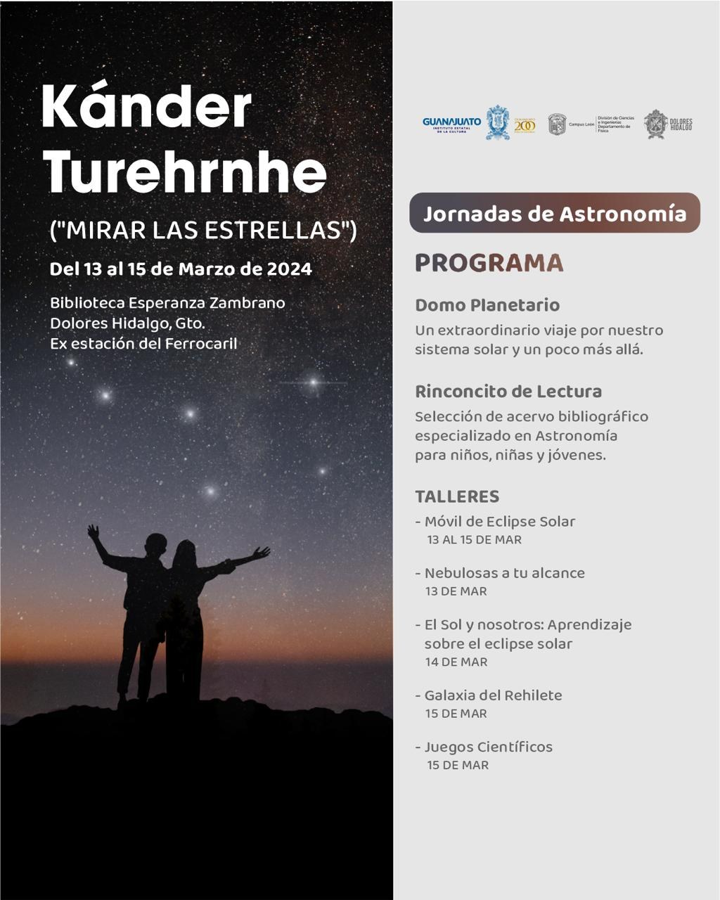

Domo planetario
Un extraordinario viaje por nuestro sistema solar y un poco más allá.
Leer el Cielo en municipios · Marzo 2024 · Dolores Hidalgo
Jornadas de Astronomía

Un extraordinario viaje por nuestro sistema solar y un poco más allá.
Selección de acervo bibliográfico especializado en astronomía para niños, niñas y jóvenes.
Organizaron el Instituto Estatal de la Cultura de Guanajuato, la División de Ciencias e Ingenierías (Departamento de Física) de la UG, Campus León, y el municipio de Dolores Hidalgo.
Descargar póster